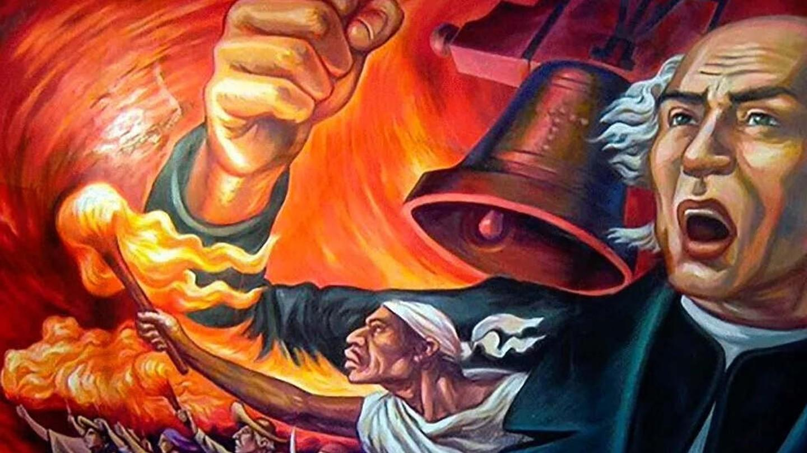
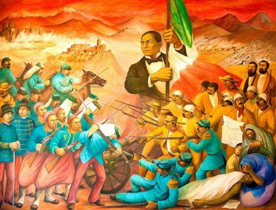
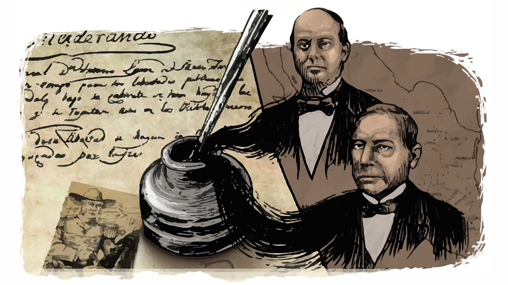

México ha pasado por diferentes etapas históricas que cambiaron su forma de gobierno y la vida de sus habitantes. Durante el siglo XIX ocurrieron la Independencia, la formación de la República, las reformas políticas y varias intervenciones extranjeras. Estos acontecimientos fueron importantes para definir las leyes, el territorio y la identidad nacional.
La Independencia fue un movimiento que buscó terminar con el dominio español sobre la Nueva España. Comenzó en septiembre de 1810, cuando Miguel Hidalgo llamó a la población a levantarse contra el gobierno virreinal. Una de las causas principales fue la desigualdad social, ya que los privilegios y las oportunidades estaban distribuidos de manera desigual. También influyeron las ideas ilustradas y la crisis política que vivía España después de la invasión napoleónica de 1808.
Miguel Hidalgo e Ignacio Allende participaron en el inicio de la lucha. Posteriormente, José María Morelos organizó nuevas campañas y propuso ideas para crear una nación independiente. Josefa Ortiz de Domínguez colaboró con los conspiradores de Querétaro y Vicente Guerrero continuó la resistencia. En 1821, el Plan de Iguala y la formación del Ejército Trigarante contribuyeron a conseguir la consumación de la Independencia.
La independencia política no resolvió inmediatamente todos los problemas del país. México tuvo que crear un gobierno propio, organizar sus instituciones y enfrentar dificultades económicas que habían aumentado durante los años de guerra.

El liberalismo mexicano defendió una forma de gobierno basada en las leyes, los derechos individuales y la participación política. Sus seguidores buscaban limitar el poder de los gobernantes y establecer una organización republicana. También defendían la igualdad jurídica, aunque en la práctica muchas desigualdades sociales continuaron existiendo.
La Constitución de 1824 estableció una república federal, en la que los estados podían atender ciertos asuntos internos. Posteriormente, la Constitución de 1857 reconoció derechos individuales y reforzó los principios liberales. Estos documentos fueron importantes porque establecieron reglas para organizar el gobierno y definir los derechos de los ciudadanos.
Durante el siglo XIX, Benito Juárez y otros liberales impulsaron reformas para cambiar la relación entre la Iglesia y el Estado. Estas medidas modificaron la administración de ciertos bienes y limitaron algunos privilegios especiales. Las reformas provocaron conflictos con los conservadores, quienes defendían otras formas de organización política y social. A pesar de las dificultades, las ideas liberales influyeron en las leyes y las instituciones mexicanas.

Después de conseguir su independencia, México enfrentó problemas para proteger su territorio. Otros países buscaron defender sus intereses comerciales, exigir pagos o ampliar sus territorios. Las intervenciones de Francia y Estados Unidos provocaron guerras que afectaron la economía, la política y la vida cotidiana de los mexicanos. También demostraron la importancia de contar con instituciones fuertes y defender la soberanía nacional.
Entre 1846 y 1848, México y Estados Unidos se enfrentaron en una guerra relacionada con disputas territoriales y la incorporación de Texas a Estados Unidos. El conflicto terminó con el Tratado de Guadalupe Hidalgo en 1848. Como resultado, México perdió un extenso territorio al norte, lo que tuvo consecuencias importantes para su población, sus recursos y su desarrollo posterior.
Francia intervino por primera vez en México entre 1838 y 1839, durante la llamada Guerra de los Pasteles, debido a reclamaciones económicas. En 1862 volvió a intervenir militarmente. El ejército mexicano consiguió una victoria en la batalla de Puebla el 5 de mayo, pero las tropas francesas continuaron su avance y apoyaron la creación del Segundo Imperio Mexicano, encabezado por Maximiliano de Habsburgo.
Benito Juárez mantuvo el gobierno republicano durante el conflicto. En 1867, las fuerzas republicanas derrotaron al Imperio y restauraron la República. Este acontecimiento fue importante porque México conservó su forma de gobierno republicana y reafirmó su independencia frente a una potencia extranjera.

Durante el siglo XIX, México experimentó cambios constantes en su gobierno. Los liberales defendían las libertades individuales y el federalismo, mientras que los conservadores apoyaban otras formas de organización política. Estas diferencias provocaron enfrentamientos que dificultaron la estabilidad del país y retrasaron la solución de varios problemas.
Las guerras dañaron los campos de cultivo, las minas y las rutas comerciales. Además, el gobierno tenía dificultades para recaudar impuestos y pagar sus deudas. Gran parte de la población vivía en condiciones difíciles y las desigualdades sociales continuaban. Con el tiempo, las reformas y los cambios políticos ayudaron a definir nuevas formas de organizar la sociedad y administrar el país.
La historia de México durante el siglo XIX estuvo marcada por la búsqueda de libertad, la construcción de leyes y la defensa del territorio. La Independencia permitió formar una nación propia; el liberalismo influyó en sus instituciones; y las invasiones extranjeras mostraron la importancia de defender la soberanía. Todos estos procesos contribuyeron a formar el México moderno y permiten comprender mejor su historia política, económica y social.